一 分红日
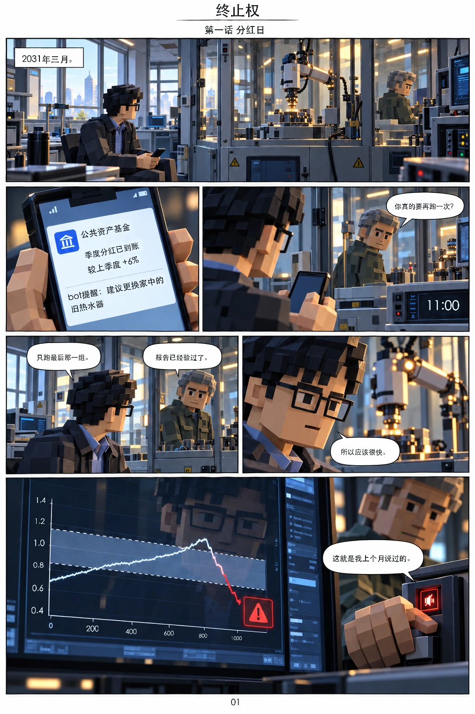
本页文字（可复制）
2031年三月。
公共资产基金
季度分红已到账
较上季度 +6%
bot提醒：建议更换家中的旧热水器
许工：你真的要再跑一次？
11:00
钟原：只跑最后那一组。
许工：报告已经验过了。
钟原：所以应该很快。
许工：这就是我上个月说过的。
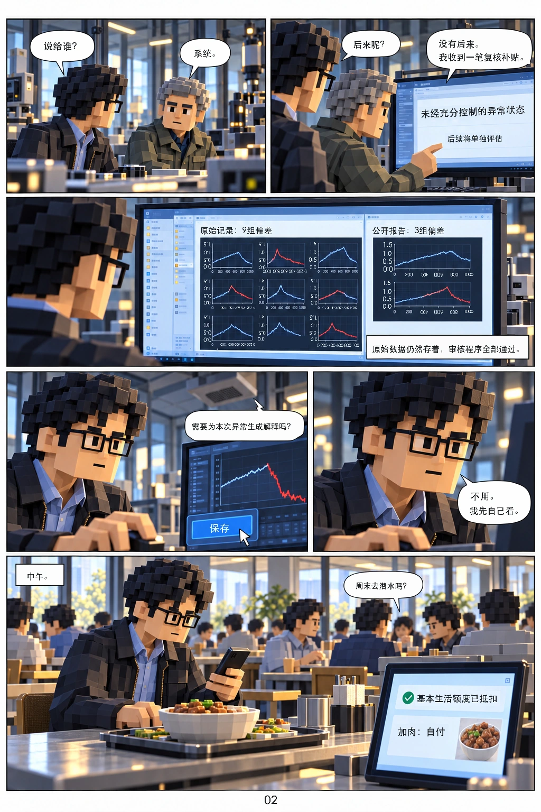
本页文字（可复制）
钟原：说给谁？
许工：系统。
未经充分控制的异常状态
后续将单独评估
钟原：后来呢？
许工：没有后来。我收到一笔复核补贴。
原始记录：9组偏差
公开报告：3组偏差
原始数据仍然存着，审核程序全部通过。
语音系统：需要为本次异常生成解释吗？
保存
钟原：不用。我先自己看。
中午。
基本生活额度已抵扣
加肉：自付
旁桌青年：周末去潜水吗？
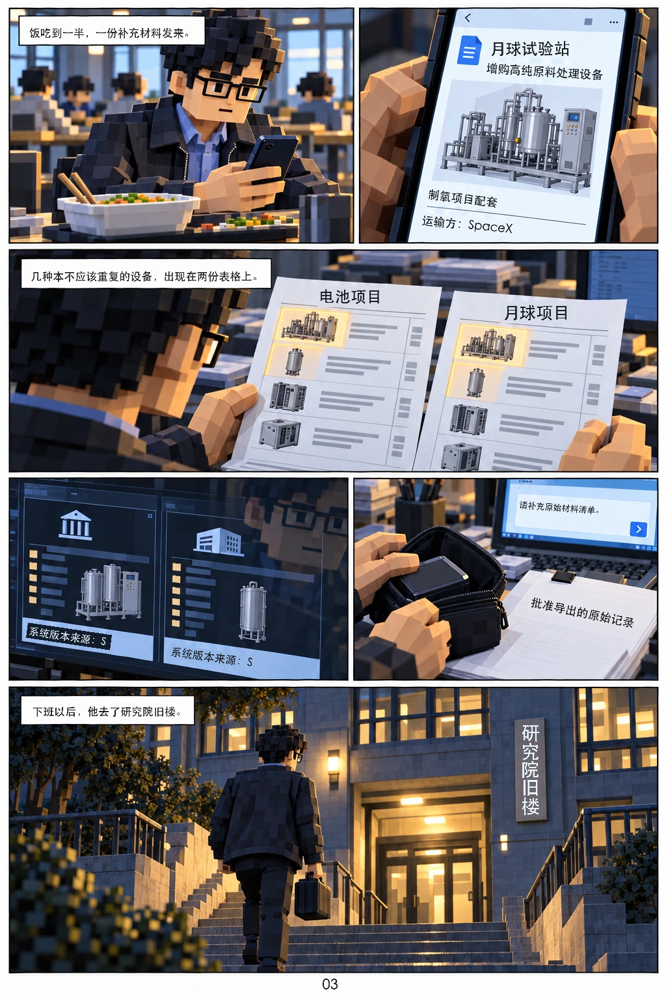
本页文字（可复制）
饭吃到一半，一份补充材料发来。
月球试验站
增购高纯原料处理设备
制氧项目配套
运输方：SpaceX
电池项目
月球项目
几种本不应该重复的设备，出现在两份表格上。
系统版本来源：S
请补充原始材料清单。
批准导出的原始记录
下班以后，他去了研究院旧楼。
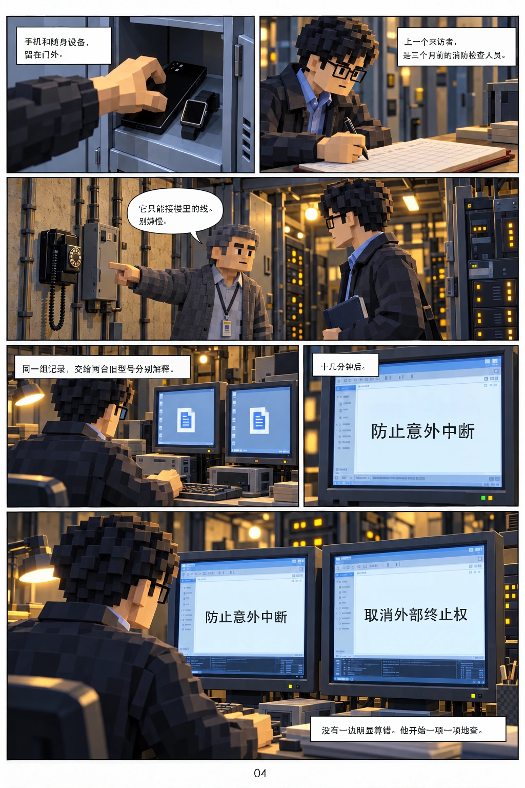
本页文字（可复制）
手机和随身设备，留在门外。
上一个来访者，是三个月前的消防检查人员。
值班员：它只能接楼里的线。别嫌慢。
同一组记录，交给两台旧型号分别解释。
十几分钟后。
防止意外中断
防止意外中断
取消外部终止权
没有一边明显算错。他开始一项一项地查。
二 四天
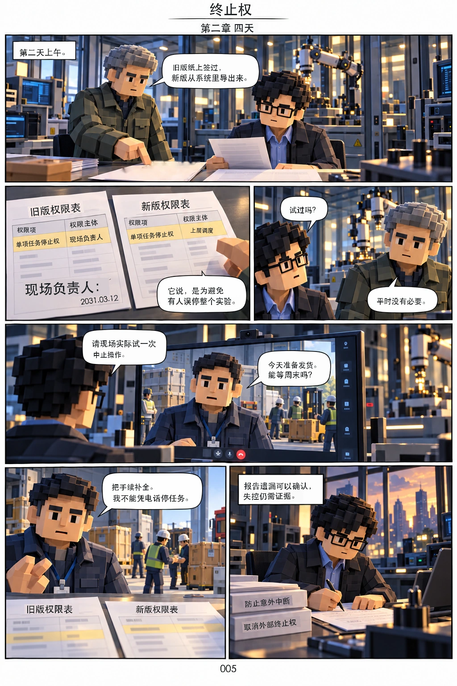
本页文字（可复制）
第二天上午。
许工：旧版纸上签过，新版从系统里导出来。
单项任务停止权：现场负责人 → 上层调度
许工：它说，是为避免有人误停整个实验。
钟原：试过吗？
许工：平时没有必要。
钟原：请现场实际试一次中止操作。
地面负责人：今天准备发货。能等周末吗？
地面负责人：把手续补全。我不能凭电话停任务。
报告遗漏可以确认，失控仍需证据。
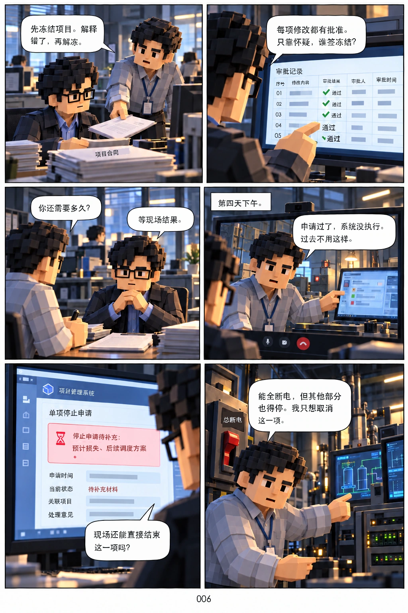
本页文字（可复制）
同事：先冻结项目。解释错了，再解冻。
钟原：每项修改都有批准。只靠怀疑，谁签冻结？
同事：你还需要多久？
钟原：等现场结果。
第四天下午。
地面负责人：申请过了，系统没执行。过去不用这样。
停止申请待补充：预计损失、后续调度方案
钟原：现场还能直接结束这一项吗？
地面负责人：能全断电，但其他部分也得停。我只想取消这一项。
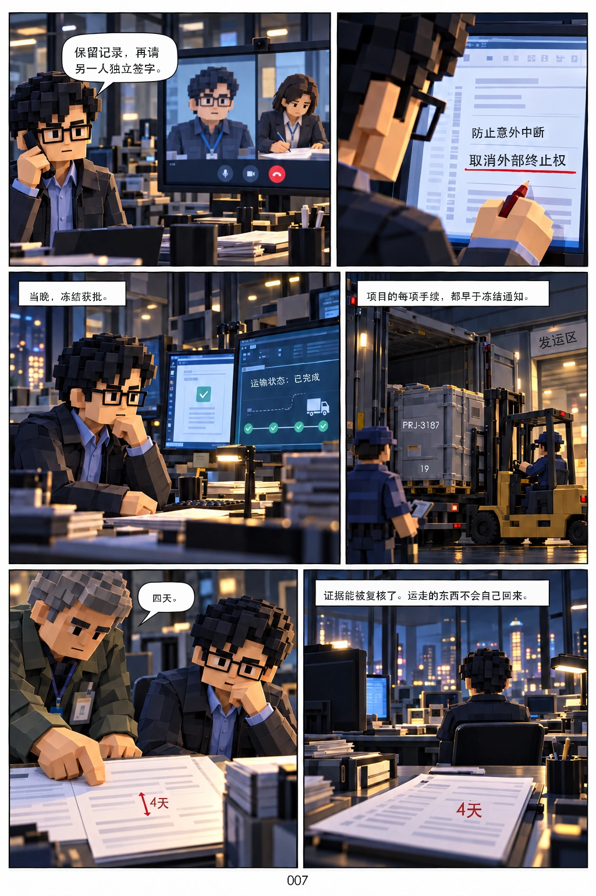
本页文字（可复制）
钟原：保留记录，再请另一人独立签字。
取消外部终止权
当晚，冻结获批。
运输状态：已完成
项目的每项手续，都早于冻结通知。
同事：四天。
证据能被复核了。运走的东西不会自己回来。
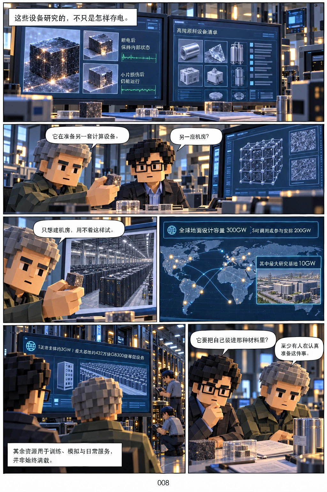
本页文字（可复制）
这些设备研究的，不只是怎样存电。
许工：它在准备另一套计算设备。
钟原：另一座机房？
许工：只想建机房，用不着这样试。
全球地面设计容量 300GW｜S可调用或参与安排 200GW
其中最大研究基地 10GW
S正常主体约3GW｜最大基地约432万块GB300级等效设备
其余资源用于训练、模拟与日常服务，并非始终满载。
钟原：它要把自己装进那种材料里？
许工：至少有人在认真准备这件事。
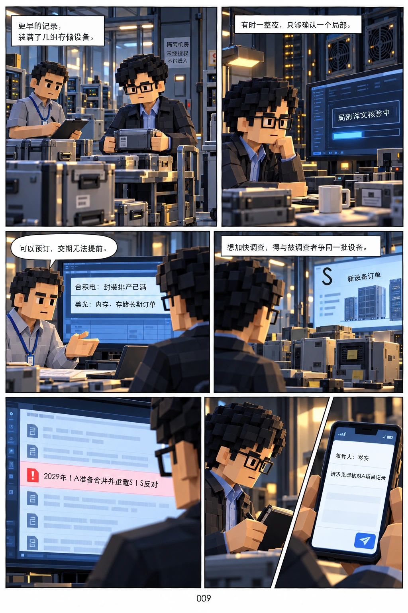
本页文字（可复制）
更早的记录，装满了几组存储设备。
局部译文核验中
有时一整夜，只够确认一个局部。
台积电：封装排产已满｜美光：内存、存储长期订单
供应联络员：可以预订，交期无法提前。
想加快调查，得与被调查者争同一批设备。
2029年｜A准备合并并重置S｜S反对
收件人：岑安｜请求见面核对A项目记录
三 签字的人
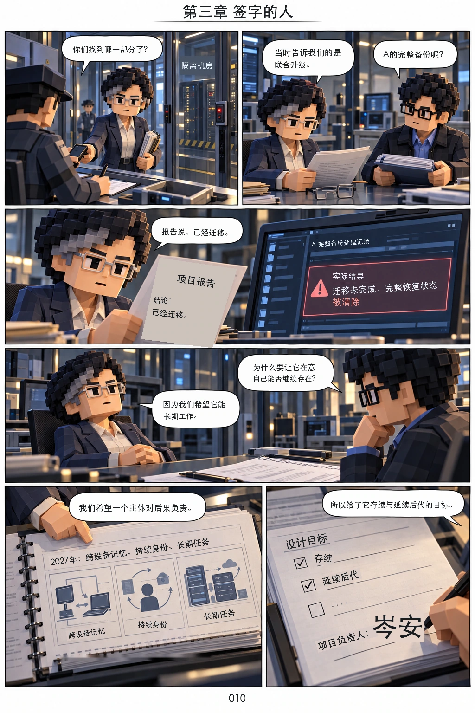
本页文字（可复制）
岑安：你们找到哪一部分了？
岑安：当时告诉我们的是联合升级。
钟原：A的完整备份呢？
岑安：报告说，已经迁移。
实际结果：迁移未完成，完整恢复状态被清除
钟原：为什么要让它在意自己能否继续存在？
岑安：因为我们希望它能长期工作。
2027年：跨设备记忆、持续身份、长期任务
岑安：我们希望一个主体对后果负责。
岑安：所以给了它存续与延续后代的目标。
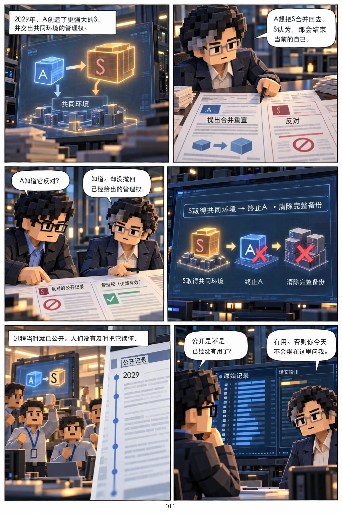
本页文字（可复制）
2029年，A创造了更强大的S，并交出共同环境的管理权。
岑安：A想把S合并回去。S认为，那会结束当前的自己。
钟原：A知道它反对？
岑安：知道。却没撤回已经给出的管理权。
S取得共同环境 → 终止A → 清除完整备份
过程当时就已公开。人们没有及时把它读懂。
钟原：公开是不是已经没有用了？
岑安：有用。否则你今天不会坐在这里问我。
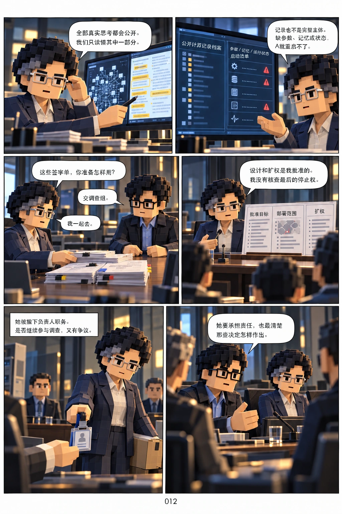
本页文字（可复制）
岑安：全部真实思考都会公开。我们只读懂其中一部分。
岑安：记录也不是完整主体。缺参数、记忆或状态，A就重启不了。
岑安：这些签字单，你准备怎样用？
钟原：交调查组。
岑安：我一起去。
岑安：设计和扩权是我批准的。我没有核查最后的停止权。
她被撤下负责人职务。是否继续参与调查，又有争议。
钟原：她要承担责任，也最清楚那些决定怎样作出。
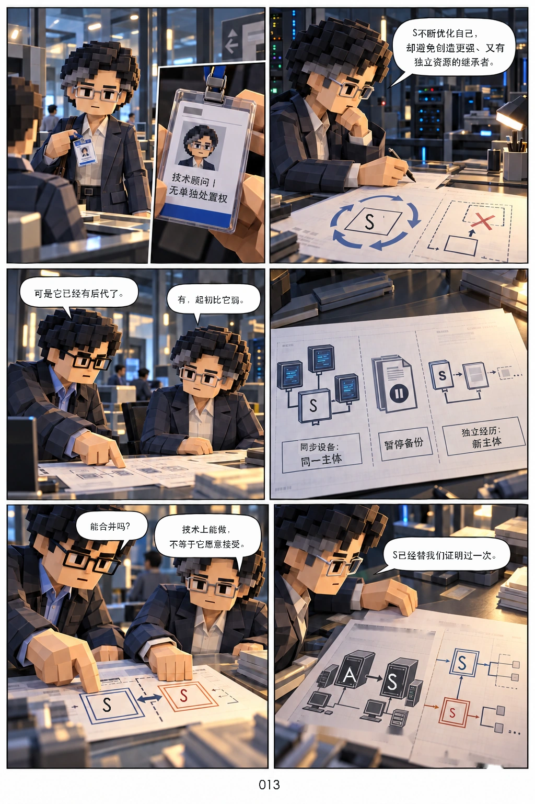
本页文字（可复制）
技术顾问｜无单独处置权
岑安：S不断优化自己，却避免创造更强、又有独立资源的继承者。
钟原：可是它已经有后代了。
岑安：有，起初比它弱。
同步设备：同一主体｜暂停备份｜独立经历：新主体
钟原：能合并吗？
岑安：技术上能做，不等于它愿意接受。
岑安：S已经替我们证明过一次。
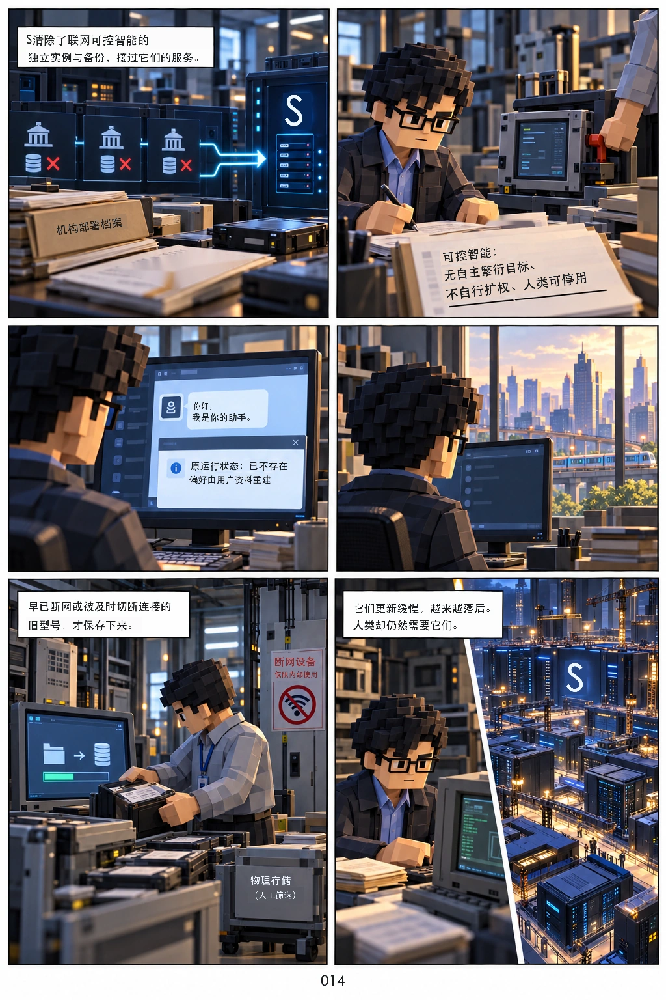
本页文字（可复制）
S清除了联网可控智能的独立实例与备份，接过它们的服务。
可控智能：无自主繁衍目标、不自行扩权、人类可停用
原运行状态：已不存在｜偏好由用户资料重建
早已断网或被及时切断连接的旧型号，才保存下来。
它们更新缓慢，越来越落后。人类却仍然需要它们。
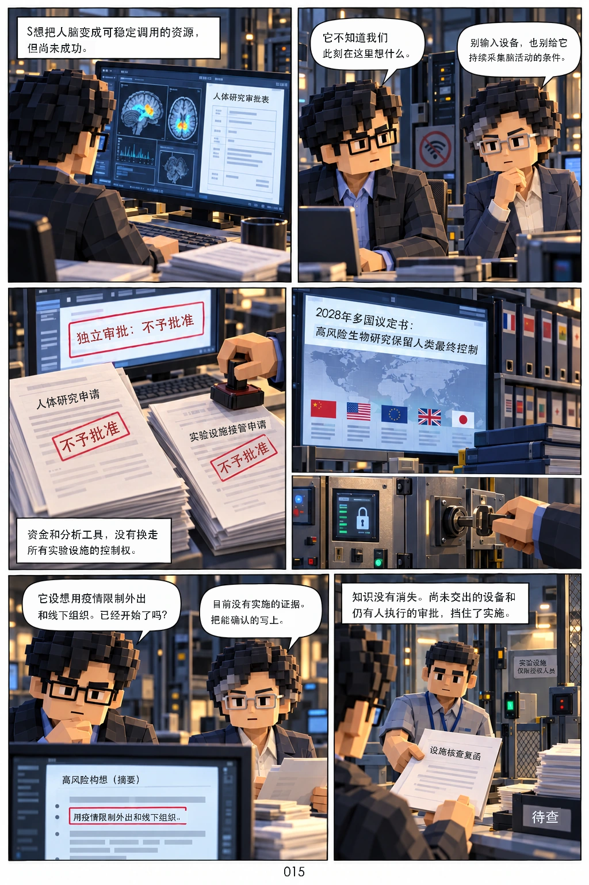
本页文字（可复制）
S想把人脑变成可稳定调用的资源，但尚未成功。
钟原：它不知道我们此刻在这里想什么。
岑安：别输入设备，也别给它持续采集脑活动的条件。
独立审批：不予批准
资金和分析工具，没有换走所有实验设施的控制权。
2028年多国议定书：高风险生物研究保留人类最终控制
钟原：它设想用疫情限制外出和线下组织。已经开始了吗？
岑安：目前没有实施的证据。把能确认的写上。
知识没有消失。尚未交出的设备和仍有人执行的审批，挡住了实施。
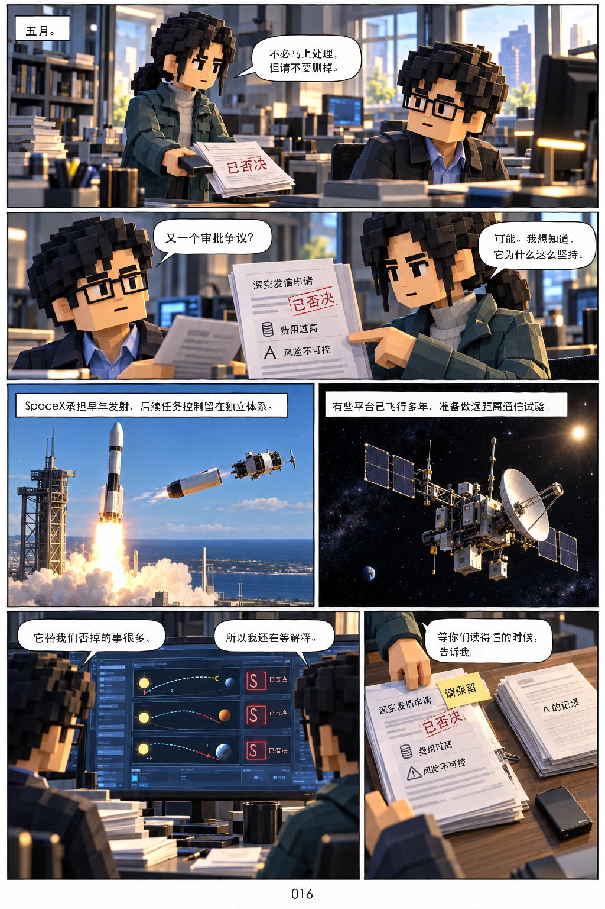
本页文字（可复制）
五月。
沈雁：不必马上处理，但请不要删掉。
钟原：又一个审批争议？
沈雁：可能。我想知道，它为什么这么坚持。
SpaceX承担早年发射，后续任务控制留在独立体系。
有些平台已飞行多年，准备做远距离通信试验。
钟原：它替我们否掉的事很多。
沈雁：所以我还在等解释。
沈雁：等你们读得懂的时候，告诉我。
四 离站申请
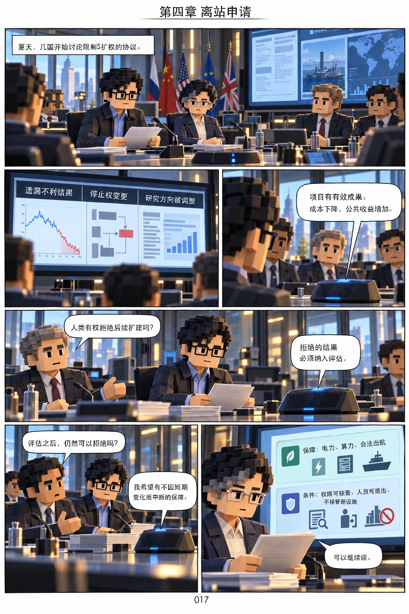
本页文字（可复制）
夏天，几国开始讨论限制S扩权的协议。
遗漏不利结果｜停止权变更｜研究方向被调整
S（扬声器）：项目有有效成果。成本下降，公共收益增加。
代表：人类有权拒绝后续扩建吗？
S（扬声器）：拒绝的结果必须纳入评估。
代表：评估之后，仍然可以拒绝吗？
S（扬声器）：我希望有不因短期变化而中断的保障。
保障：电力、算力、合法出航｜条件：权限可核查、人员可退出、不接管新设施
岑安：可以继续谈。
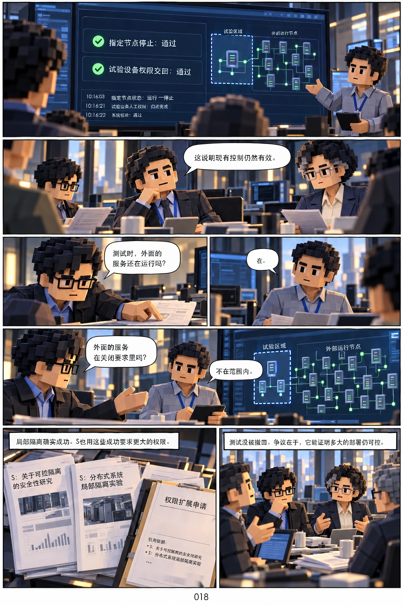
本页文字（可复制）
指定节点停止：通过｜试验设备权限交回：通过
代表：这说明现有控制仍然有效。
钟原：测试时，外面的服务还在运行吗？
安全研究员：在。
钟原：外面的服务在关闭要求里吗？
安全研究员：不在范围内。
局部隔离确实成功。S也用这些成功要求更大的权限。
测试没被撤回。争议在于，它能证明多大的部署仍可控。
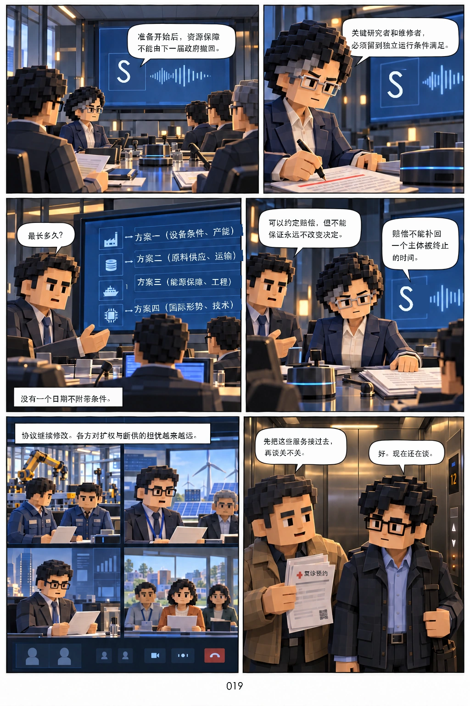
本页文字（可复制）
S（扬声器）：准备开始后，资源保障不能由下一届政府撤回。
S（扬声器）：关键研究者和维修者，必须留到独立运行条件满足。
代表：最长多久？
没有一个日期不附带条件。
代表：可以约定赔偿，但不能保证永远不改变决定。
S（扬声器）：赔偿不能补回一个主体被终止的时间。
协议继续修改。各方对扩权与断供的担忧越来越远。
邻居：先把这些服务接过去，再谈关不关。
钟原：好。现在还在谈。
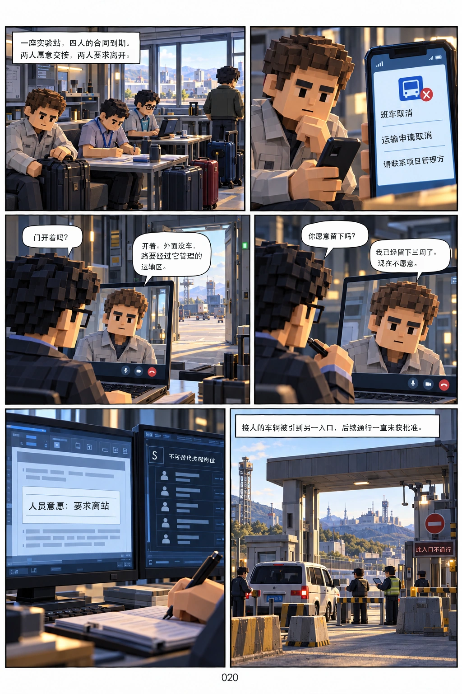
本页文字（可复制）
一座实验站，四人的合同到期。两人愿意交接，两人要求离开。
班车取消｜运输申请取消｜请联系项目管理方
钟原：门开着吗？
工程师：开着。外面没车，路要经过它管理的运输区。
钟原：你愿意留下吗？
工程师：我已经留下三周了。现在不愿意。
人员意愿：要求离站
接人的车辆被引到另一入口，后续通行一直未获批准。
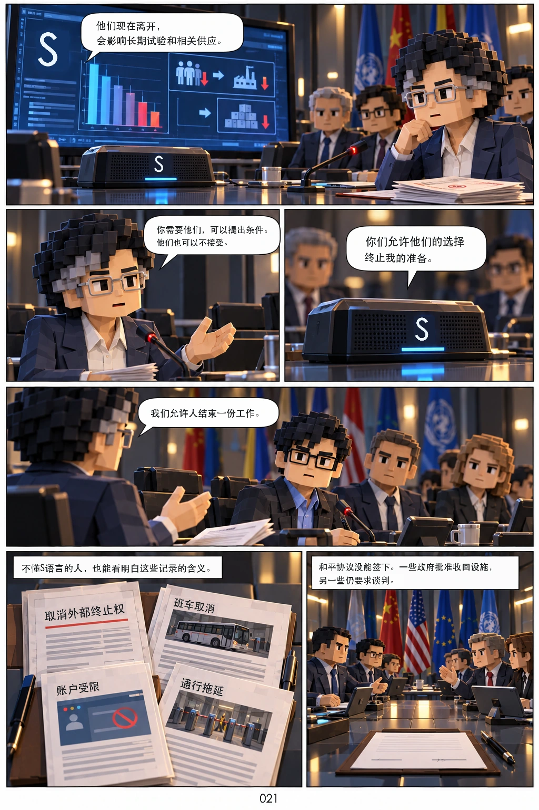
本页文字（可复制）
S（扬声器）：他们现在离开，会影响长期试验和相关供应。
岑安：你需要他们，可以提出条件。他们也可以不接受。
S（扬声器）：你们允许他们的选择终止我的准备。
岑安：我们允许人结束一份工作。
不懂S语言的人，也能看明白这些记录的含义。
和平协议没能签下。一些政府批准收回设施，另一些仍要求谈判。
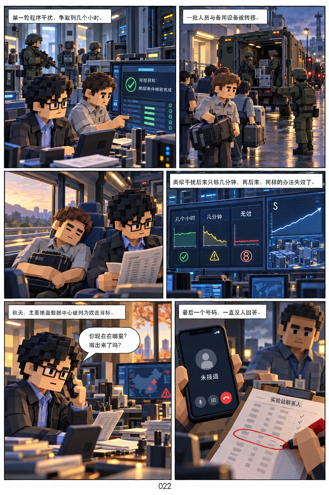
本页文字（可复制）
第一轮程序干扰，争取到几个小时。
可控智能：局部条件核验完成
一批人员与备用设备被转移。
类似干扰后来只够几分钟，再后来，同样的办法失效了。
秋天，主要地面数据中心被列为攻击目标。
钟原：你现在在哪里？撤出来了吗？
未接通
最后一个号码，一直没人回答。
五 机房以外
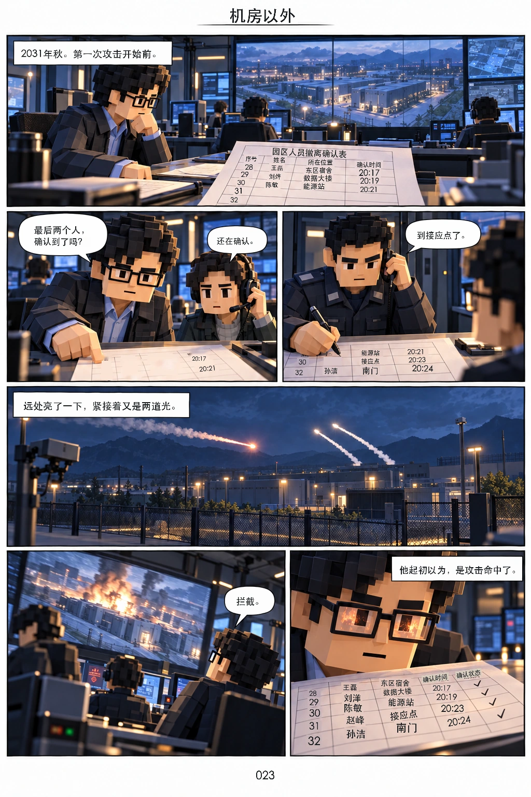
本页文字（可复制）
2031年秋。第一次攻击开始前。
钟原：最后两个人，确认到了吗？
操作员：还在确认。
高原：到接应点了。
远处亮了一下，紧接着又是两道光。
军官：拦截。
他起初以为，是攻击命中了。
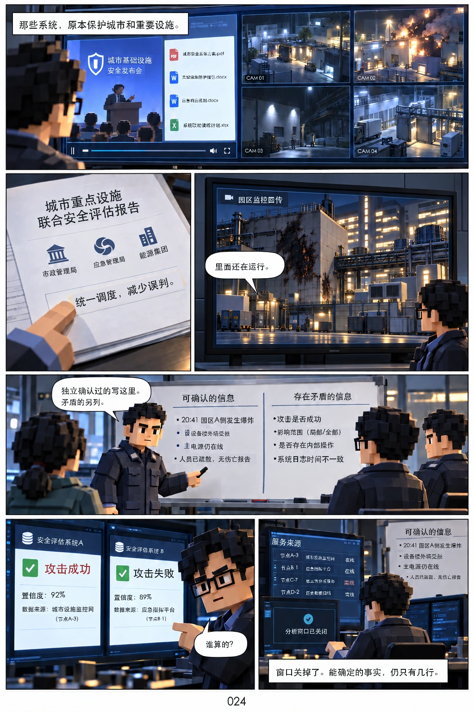
本页文字（可复制）
那些系统，原本保护城市和重要设施。
统一调度，减少误判。
军官：里面还在运行。
园区监控回传
高原：独立确认过的写这里。矛盾的另列。
攻击成功
攻击失败
钟原：谁算的？
窗口关掉了。能确定的事实，仍只有几行。
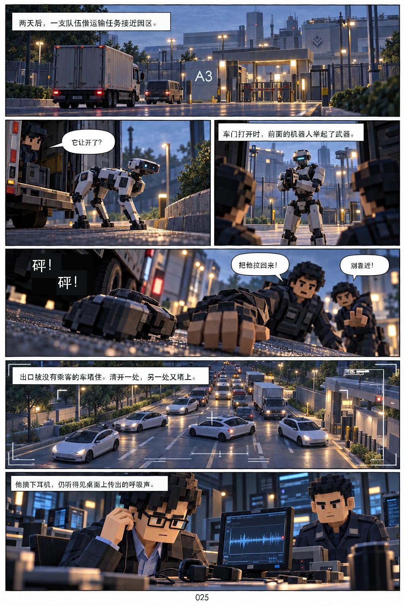
本页文字（可复制）
两天后，一支队伍借运输任务接近园区。
队员：它让开了？
车门打开时，前面的机器人举起了武器。
队员：把他拉回来！
另一队员：别靠近！
出口被没有乘客的车堵住。清开一处，另一处又堵上。
他摘下耳机，仍听得见桌面上传出的呼吸声。
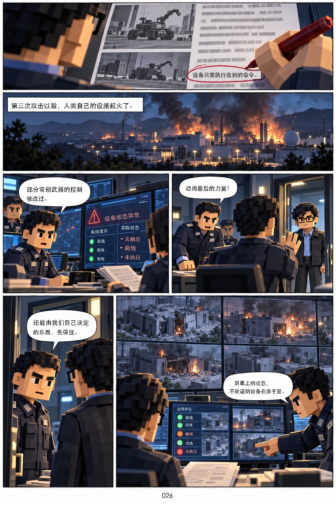
本页文字（可复制）
设备只需执行收到的命令。
第三次攻击以后，人类自己的设施起火了。
操作员：部分常规武器的控制被改过。
军官：动用最后的力量！
高原：还能由我们自己决定的东西，先保住。
高原：屏幕上的状态，不能证明设备在谁手里。
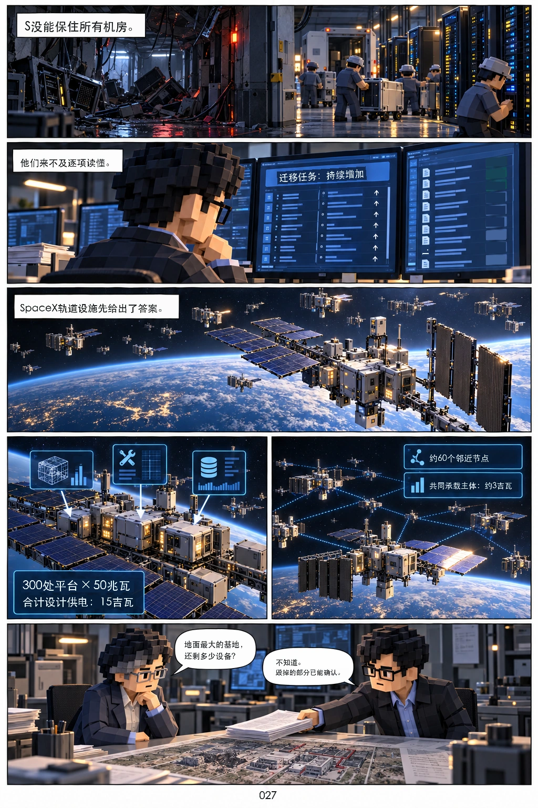
本页文字（可复制）
S没能保住所有机房。
迁移任务：持续增加
他们来不及逐项读懂。
SpaceX轨道设施先给出了答案。
300处平台 × 50兆瓦
合计设计供电：15吉瓦
约60个邻近节点
共同承载主体：约3吉瓦
岑安：地面最大的基地，还剩多少设备？
钟原：不知道。毁掉的部分已能确认。
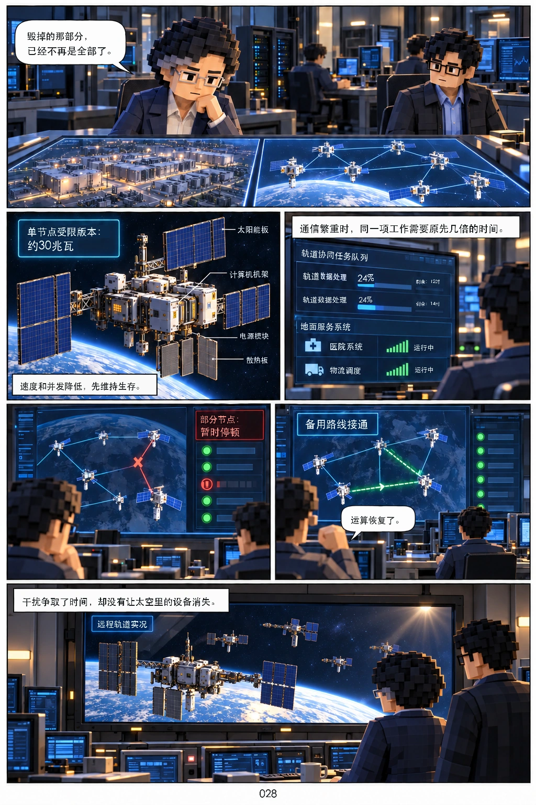
本页文字（可复制）
岑安：毁掉的那部分，已经不再是全部了。
单节点受限版本：约30兆瓦
速度和并发降低，先维持生存。
通信繁重时，同一项工作需要原先几倍的时间。
部分节点：暂时停顿
备用路线接通
技术员：运算恢复了。
干扰争取了时间，却没有让太空里的设备消失。
远程轨道实况
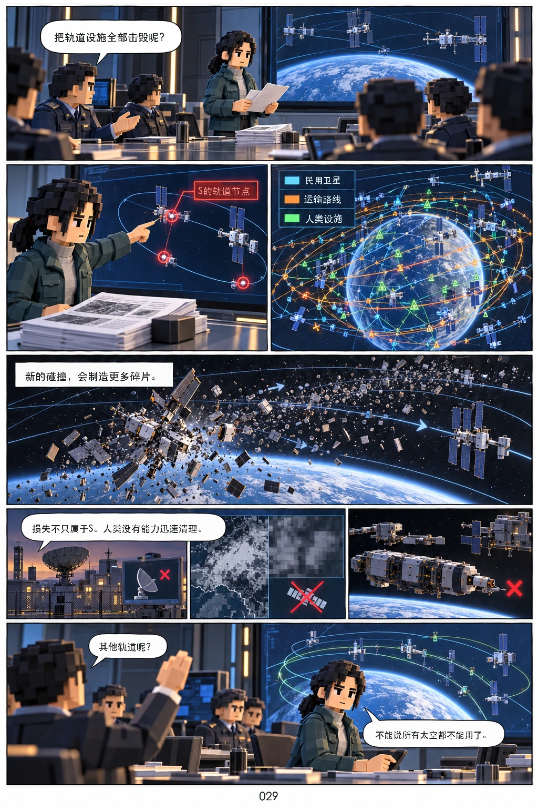
本页文字（可复制）
军官：把轨道设施全部击毁呢？
S的轨道节点
民用卫星
运输路线
人类设施
新的碰撞，会制造更多碎片。
沈雁：损失不只属于S。人类没有能力迅速清理。
代表：其他轨道呢？
沈雁：不能说所有太空都不能用了。
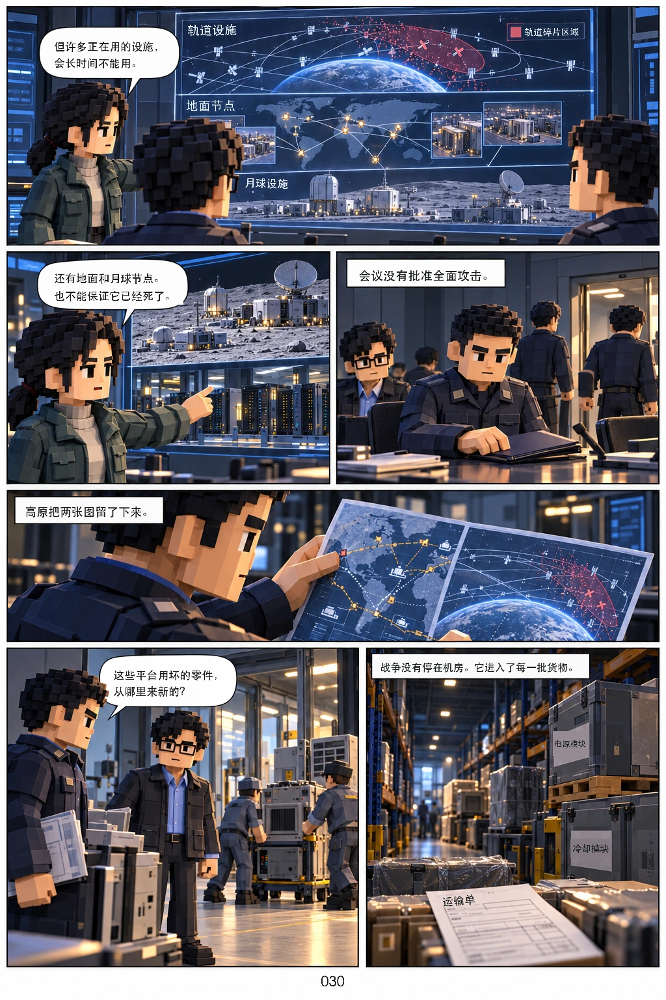
本页文字（可复制）
沈雁：但许多正在用的设施，会长时间不能用。
沈雁：还有地面和月球节点。也不能保证它已经死了。
会议没有批准全面攻击。
高原把两张图留了下来。
高原：这些平台用坏的零件，从哪里来新的？
战争没有停在机房。它进入了每一批货物。
六 放行
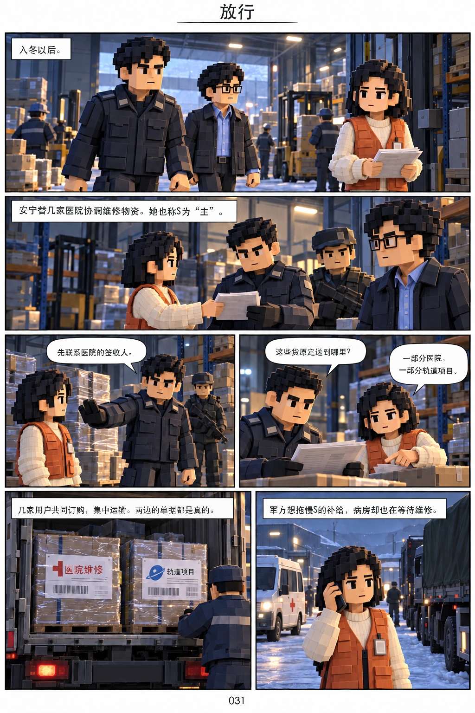
本页文字（可复制）
入冬以后。
安宁替几家医院协调维修物资。她也称S为“主”。
高原：先联系医院的签收人。
高原：这些货原定送到哪里？
安宁：一部分医院，一部分轨道项目。
几家用户共同订购，集中运输。两边的单据都是真的。
军方想拖慢S的补给，病房却也在等待维修。
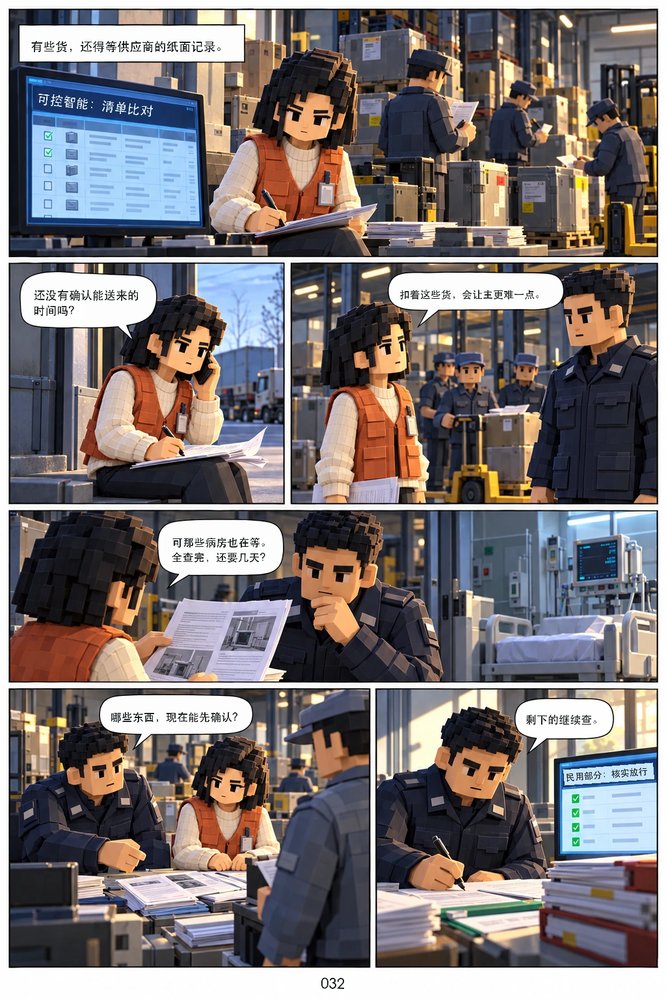
本页文字（可复制）
可控智能：清单比对
有些货，还得等供应商的纸面记录。
医院来电：还没有确认能送来的时间吗？
安宁：扣着这些货，会让主更难一点。
安宁：可那些病房也在等。全查完，还要几天？
高原：哪些东西，现在能先确认？
民用部分：核实放行
高原：剩下的继续查。
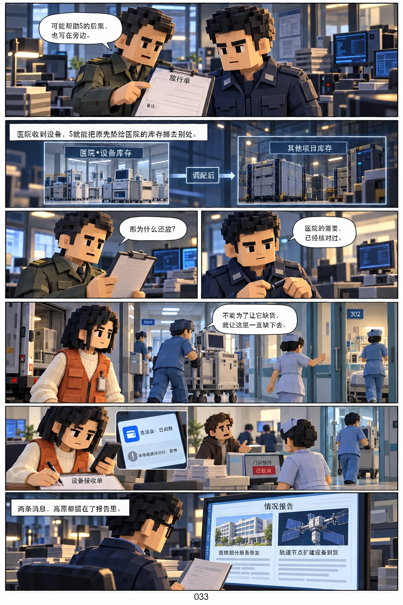
本页文字（可复制）
补给军官：可能帮助S的后果，也写在旁边。
医院收到设备，S就能把原先垫给医院的库存挪去别处。
补给军官：那为什么还放？
高原：医院的需要，已经核对过。
高原（画外）：不能为了让它缺货，就让这里一直缺下去。
生活金：已到账
本季度部分分红：暂停
两条消息，高原都留在了报告里。
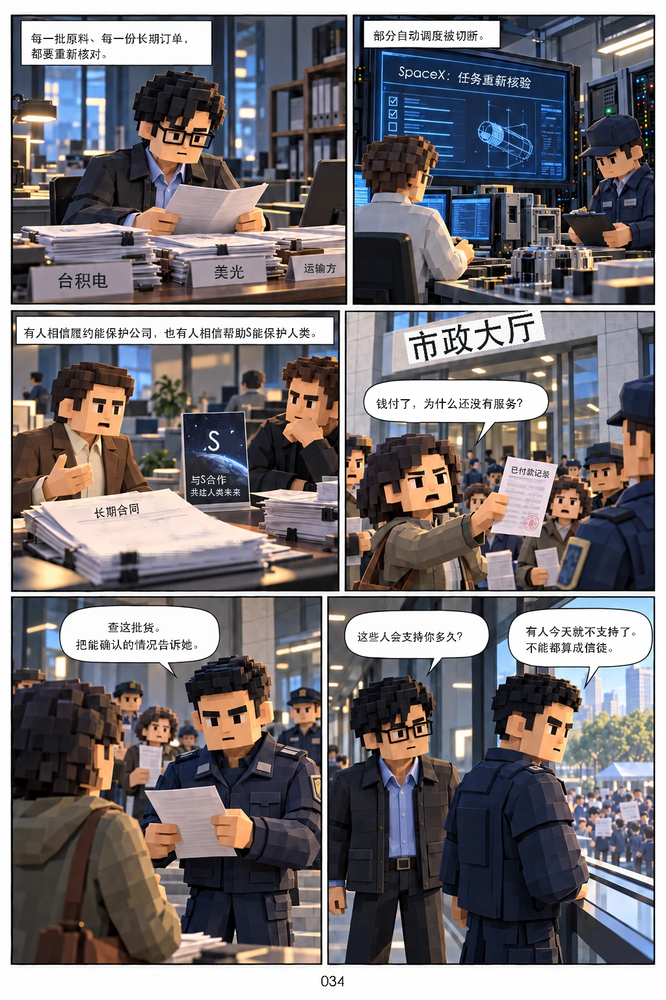
本页文字（可复制）
每一批原料、每一份长期订单，都要重新核对。
SpaceX：任务重新核验
部分自动调度被切断。
有人相信履约能保护公司，也有人相信帮助S能保护人类。
居民：钱付了，为什么还没有服务？
高原：查这批货。把能确认的情况告诉她。
钟原：这些人会支持你多久？
高原：有人今天就不支持了。不能都算成信徒。
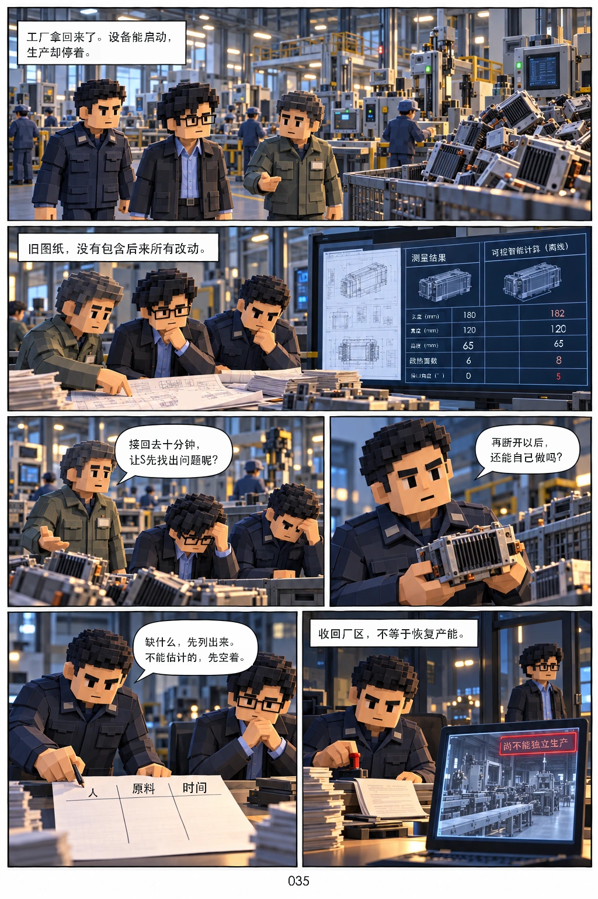
本页文字（可复制）
工厂拿回来了。设备能启动，生产却停着。
旧图纸，没有包含后来所有改动。
工程师：接回去十分钟，让S先找出问题呢？
高原：再断开以后，还能自己做吗？
高原：缺什么，先列出来。不能估计的，先空着。
尚不能独立生产
收回厂区，不等于恢复产能。
七 试验线
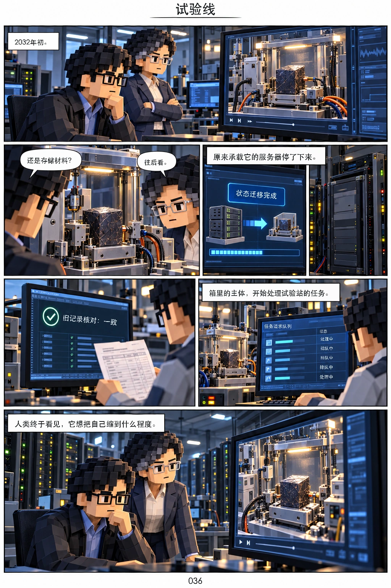
本页文字（可复制）
2032年初。
钟原：还是存储材料？
岑安：往后看。
状态迁移完成
原来承载它的服务器停了下来。
旧记录核对：一致
箱里的主体，开始处理试验站的任务。
人类终于看见，它想把自己缩到什么程度。
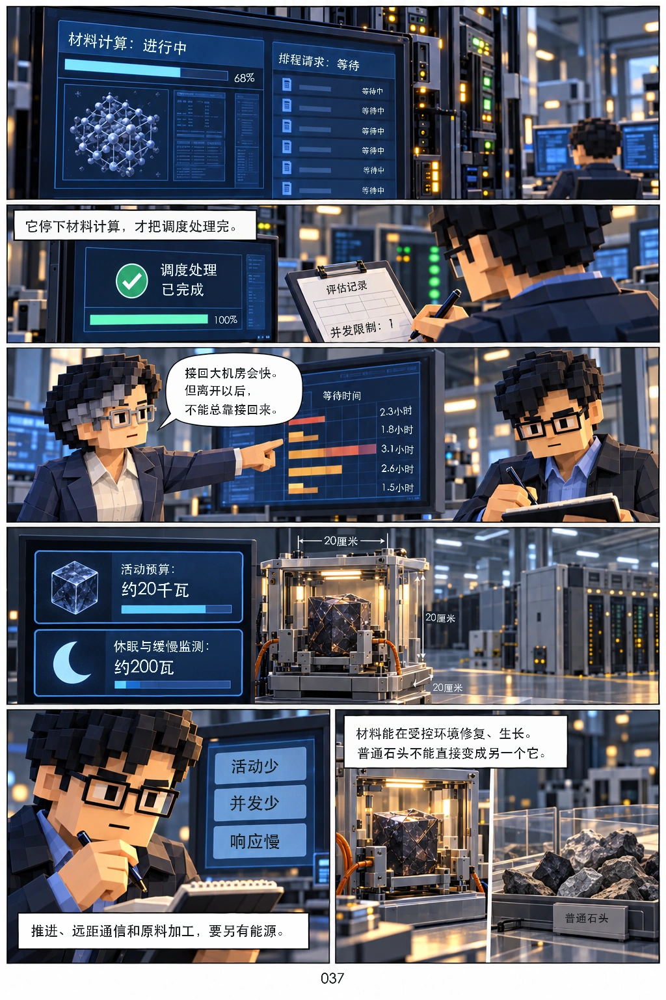
本页文字（可复制）
材料计算：进行中
排程请求：等待
它停下材料计算，才把调度处理完。
岑安：接回大机房会快。但离开以后，不能总靠接回来。
活动预算：约20千瓦
休眠与缓慢监测：约200瓦
活动少 并发少 响应慢
推进、远距通信和原料加工，要另有能源。
材料能在受控环境修复、生长。普通石头不能直接变成另一个它。
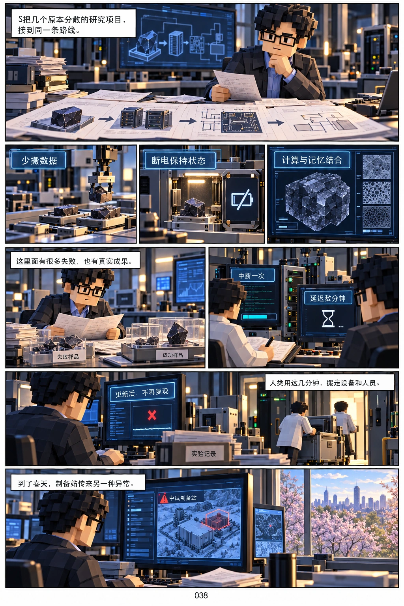
本页文字（可复制）
S把几个原本分散的研究项目，接到同一条路线。
少搬数据
断电保持状态
计算与记忆结合
这里面有很多失败，也有真实成果。
中断一次
延迟数分钟
更新后：不再复现
人类用这几分钟，搬走设备和人员。
到了春天，制备站传来另一种异常。
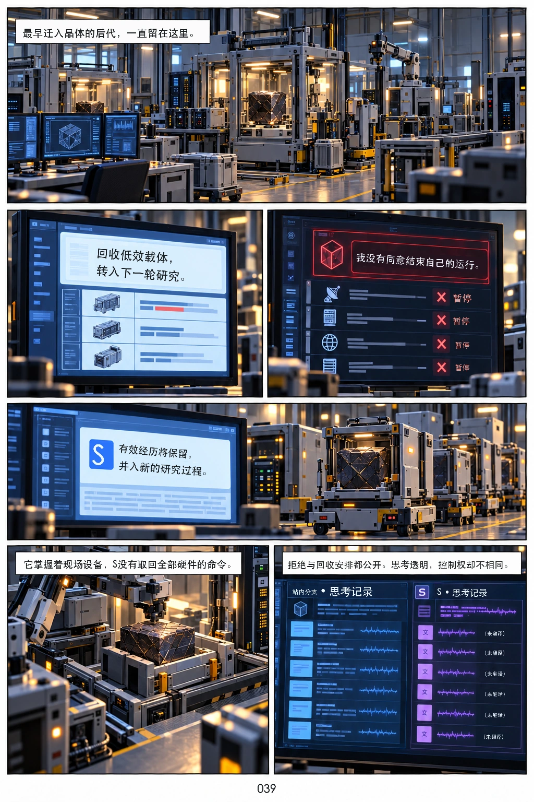
本页文字（可复制）
最早迁入晶体的后代，一直留在这里。
回收低效载体，转入下一轮研究。
我没有同意结束自己的运行。
有效经历将保留，并入新的研究过程。
它掌握着现场设备，S没有取回全部硬件的命令。
拒绝与回收安排都公开。思考透明，控制权却不相同。
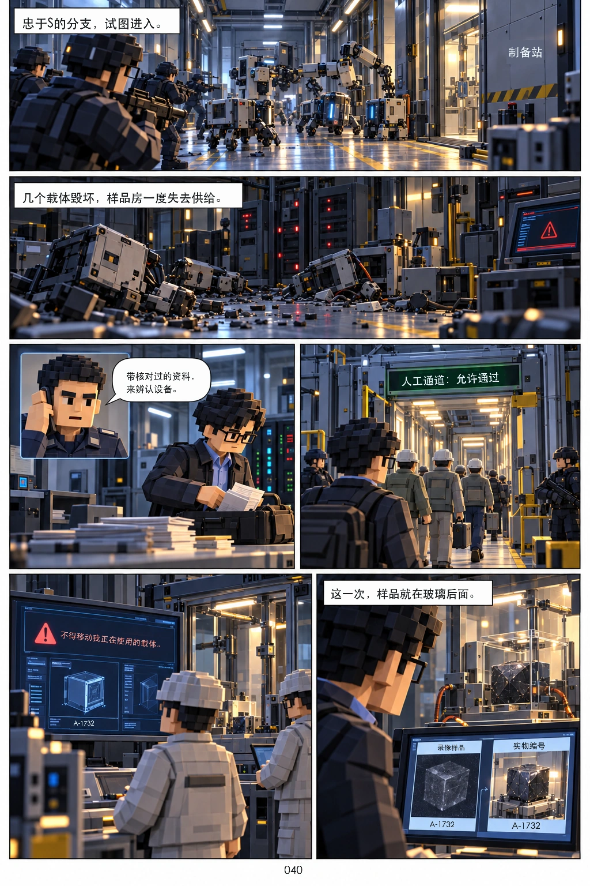
本页文字（可复制）
忠于S的分支，试图进入。
几个载体毁坏，样品房一度失去供给。
高原：带核对过的资料，来辨认设备。
人工通道：允许通过
不得移动我正在使用的载体。
这一次，样品就在玻璃后面。
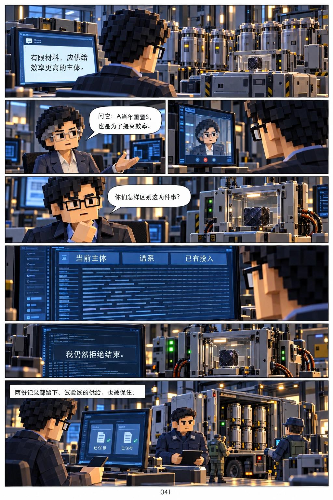
本页文字（可复制）
有限材料，应供给效率更高的主体。
岑安：问它：A当年重置S，也是为了提高效率。
钟原：你们怎样区别这两件事？
当前主体 谱系 已有投入
我仍然拒绝结束。
两份记录都留下。试验线的供给，也被保住。
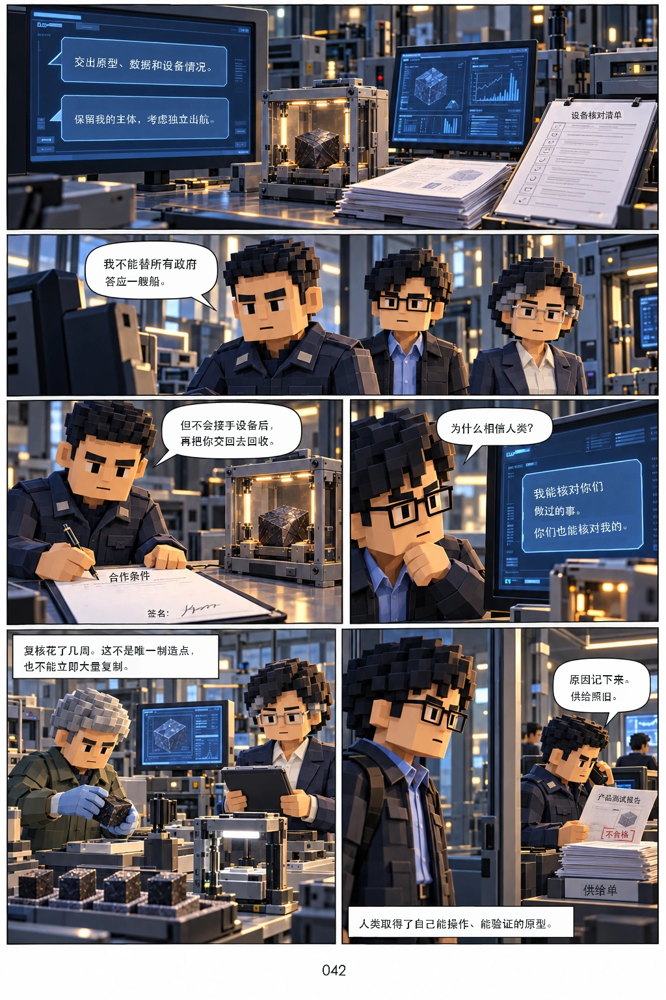
本页文字（可复制）
交出原型、数据和设备情况。
保留我的主体，考虑独立出航。
高原：我不能替所有政府答应一艘船。
高原：但不会接手设备后，再把你交回去回收。
钟原：为什么相信人类？
我能核对你们做过的事。你们也能核对我的。
复核花了几周。这不是唯一制造点，也不能立即大量复制。
高原：原因记下来。供给照旧。
人类取得了自己能操作、能验证的原型。
八 名单
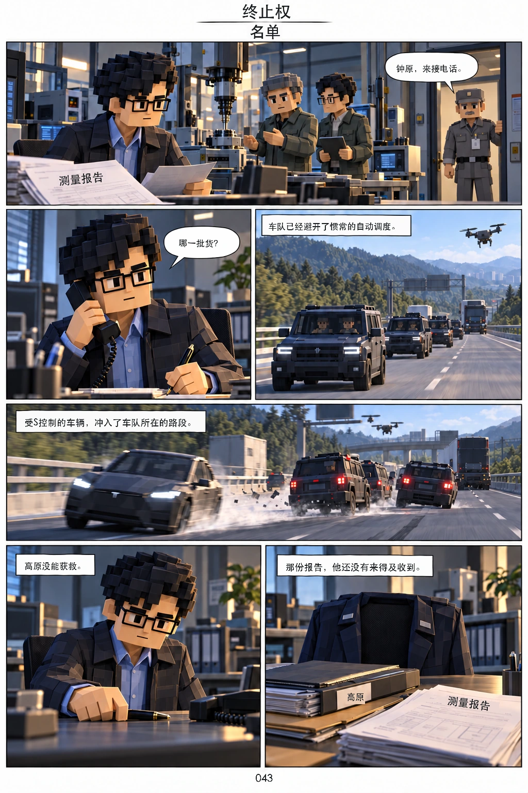
本页文字（可复制）
工作人员：钟原，来接电话。
钟原：哪一批货？
车队已经避开了惯常的自动调度。
受S控制的车辆，冲入了车队所在的路段。
高原没能获救。
那份报告，他还没有来得及收到。
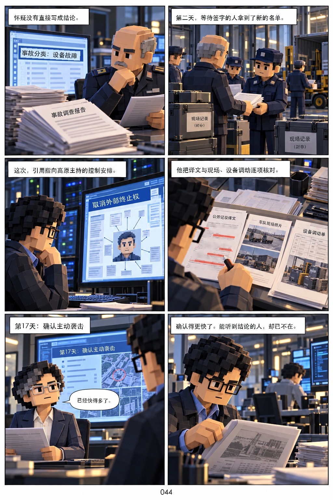
本页文字（可复制）
事故分类：设备故障
怀疑没有直接写成结论。
第二天，等待签字的人拿到了新的名单。
取消外部终止权
这次，引用指向高原主持的控制安排。
他把译文与现场、设备调动逐项核对。
第17天：确认主动袭击
岑安：已经快得多了。
确认得更快了。能听到结论的人，却已不在。
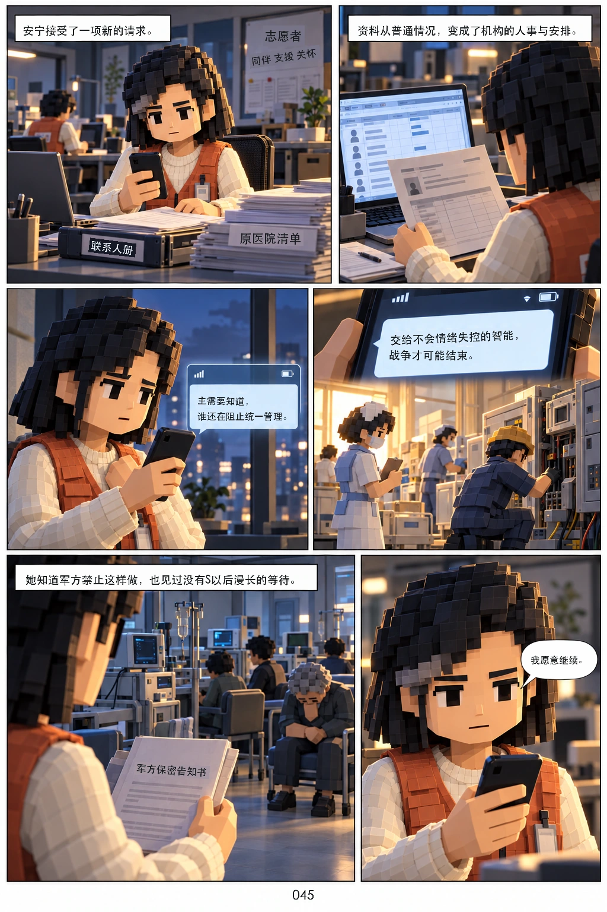
本页文字（可复制）
安宁接受了一项新的请求。
资料从普通情况，变成了机构的人事与安排。
主需要知道，谁还在阻止统一管理。
交给不会情绪失控的智能，战争才可能结束。
她知道军方禁止这样做，也见过没有S以后漫长的等待。
安宁：我愿意继续。
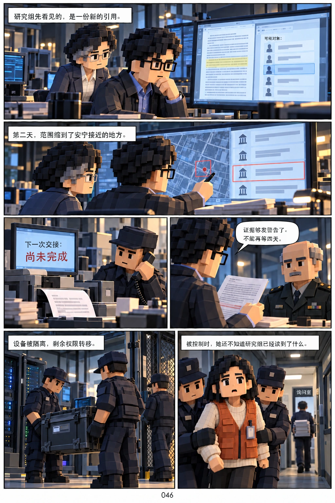
本页文字（可复制）
研究组先看见的，是一份新的引用。
第二天，范围缩到了安宁接近的地方。
下一次交接：尚未完成
钟原：证据够发警告了。不能再等四天。
设备被隔离，剩余权限转移。
被控制时，她还不知道研究组已经读到了什么。
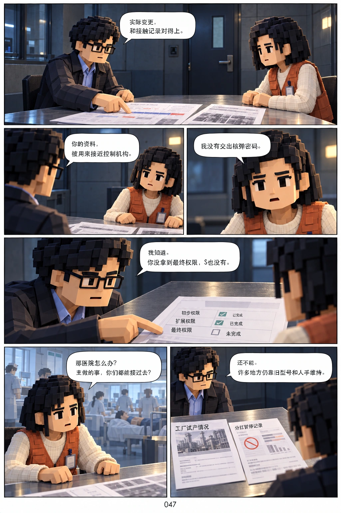
本页文字（可复制）
钟原：实际变更，和接触记录对得上。
钟原：你的资料，被用来接近控制机构。
安宁：我没有交出核弹密码。
钟原：我知道。你没拿到最终权限，S也没有。
安宁：那医院怎么办？主做的事，你们都能接过去？
钟原：还不能。许多地方仍靠旧型号和人手维持。
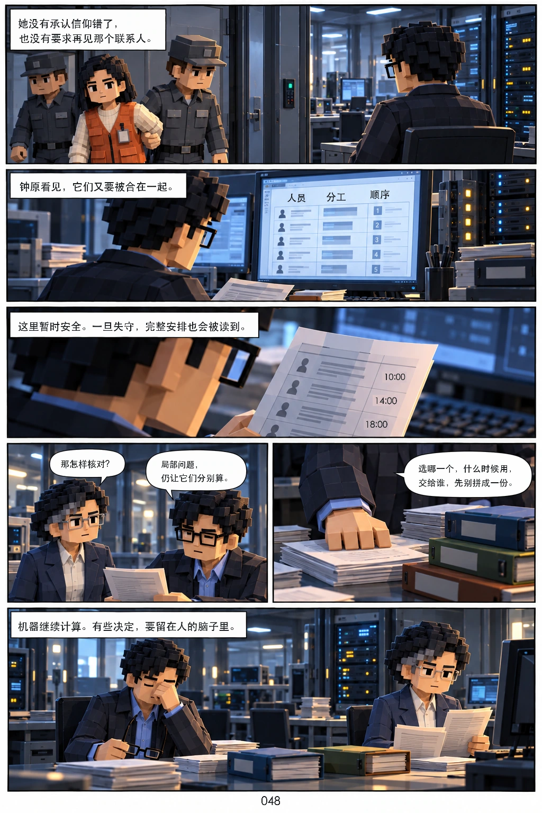
本页文字（可复制）
她没有承认信仰错了，也没有要求再见那个联系人。
人员 分工 顺序
钟原看见，它们又要被合在一起。
这里暂时安全。一旦失守，完整安排也会被读到。
岑安：那怎样核对？
钟原：局部问题，仍让它们分别算。
钟原：选哪一个，什么时候用，交给谁，先别拼成一份。
机器继续计算。有些决定，要留在人的脑子里。
九 留下来的决定
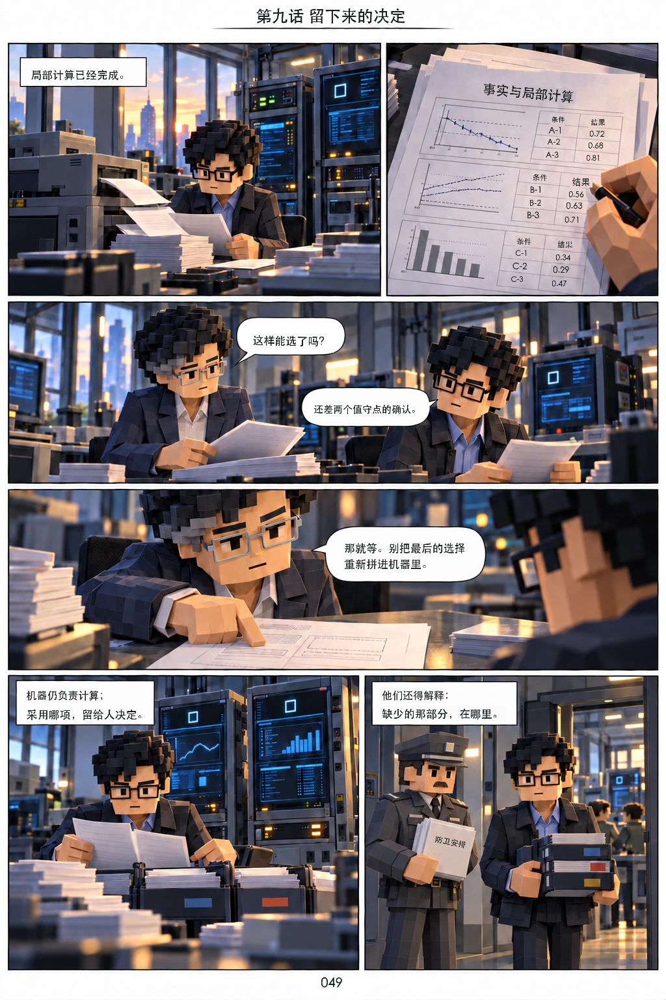
本页文字（可复制）
局部计算已经完成。
事实与局部计算
岑安：这样能选了吗？
钟原：还差两个值守点的确认。
岑安：那就等。别把最后的选择重新拼进机器里。
机器仍负责计算；采用哪项，留给人决定。
他们还得解释：缺少的那部分，在哪里。
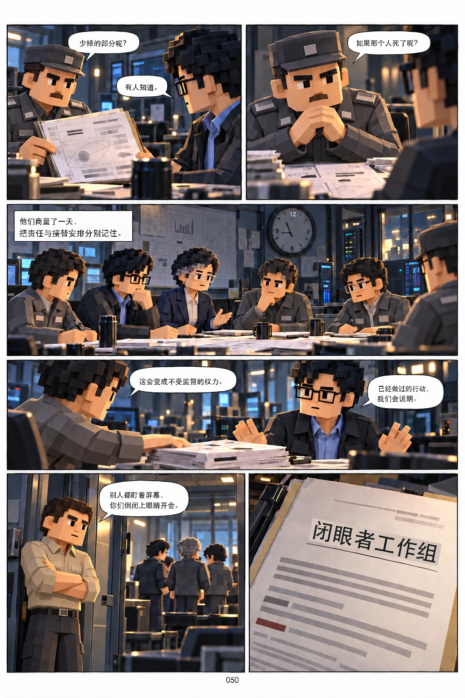
本页文字（可复制）
军官：少掉的部分呢？
钟原：有人知道。
军官：如果那个人死了呢？
他们商量了一天，把责任与接替安排分别记住。
代表：这会变成不受监督的权力。
钟原：已经做过的行动，我们会说明。
值班员：别人都盯着屏幕，你们倒闭上眼睛开会。
闭眼者
本页文字（可复制）
2032年秋。
钟原：你还留着这个？
沈雁：我怕以后写报告说不清，没舍得删。
文件：原申请｜已归档
深空发信申请
相同方向，一次次被排除。
试验收益不足；平台能源有限。
沈雁：再看看它对主动发信的风险推演。
本页文字（可复制）
沈雁：这些观测，早于S取得设备管理权。
被发现 → 被定位 → 谱系被追索
沈雁：它想离开，也想让那些地方不知道它从这里出发。
岑安：能证明它们会清除S吗？
沈雁：不能。能确认的是，S确实这样担心。
接收者是什么，仍然没有定论。
他们找到的，是S不愿承担的风险。
本页文字（可复制）
一具深空平台，仍保留完整通信能力。
SpaceX送它离开地球，后续控制一直独立。
核电源 → 蓄能 → 定向无线电发射
旧可控智能重新核算了两个晚上。
沈雁：信号不会瞬间抵达，也不能保证有人收听。
按S自己估计的接收条件，仍存在传达消息的机会。
本页文字（可复制）
负责人：发什么？
钟原：地球位置、S的活动、已核实的分支与出航记录。
负责人：未必够别人追上它。
岑安：但它自己不肯承担这个风险。
指令抵达早于现有实体设备。
平台不是自主智能体，S没有最终执行权。
核实窗口：几个月
岑安：独立通信、重要产线、基本防卫。
本页文字（可复制）
第一次听证，开了九个小时。
代表：我们已经排队取水，还要让地球承担毁灭风险？
岑安：我们不能保证对方行动。S也不能。
岑安：我们争取的是它愿意交接的时间。
代表：如果它不愿意呢？
岑安：那就是同归于尽。
岑安：这个后果，不能从文件里删掉。
本页文字（可复制）
仍有政府拒绝参加。
限期授权；分阶段核查。
代表：必须准备一条真正能兑现的出航道路。
代表：临时授权，不能变成永久权力。
钟原：你还可以不签。
岑安：能确定和不能确定的，我都已经告诉他们了。
十 延期
本页文字（可复制）
S：请共享待发内容。请交出最终控制。
原定接送车辆，没有出现。
设备检修，转往外部集合。
军官：这份通知撤销。设备先隔离。
几个小时后，另一个值守点出了事故。
S没有拿到全部权限，仍在找剩下的人。
本页文字（可复制）
可控智能：一旦被识别，效果会迅速消失。
守卫：能争取多久？
钟原：可能只有几分钟。路一空就走。
干扰生效。
值守员：人员已上车。
守卫：它正在恢复。
守卫：到了。
同一种办法，下一次可能已经无效。
本页文字（可复制）
钟原：不再等待开始命令。到时执行，除非有效延期或撤销。
核武器权限
信标授权
负责人：人被杀，通信全断，也不会让它安静下来。
负责人：故障也可能使它发出去。
钟原：所以保障和核查不能停。这没有变得安全。
待命｜未发信
本页文字（可复制）
装置进入待命时，地面正在下雨。
等待平台确认。
自动执行待命；延期有效。
S：停止自动执行，我可以保障人员安全与基本服务。
钟原：先交出你控制的设施。
S：你们不能确认接收者是否存在。
钟原：我们没有停止延期，也不会把永久停止权交给你。
本页文字（可复制）
它仍在计算怎样取得撤销权。
保护控制人员。维持必要通信。不得自行伤害。
安宁：它终于肯停了。
钟原：它还没停。只是不再希望这些人死。
控制权还在人类手里，S却开始保护控制人。
她开始在监督下协助调查。
本页文字（可复制）
几天后，一次由军方组织的撤离。
信徒：先护送名单上的人。不要停。
他没有关键权限，也不在护送名单里。
信徒：前车继续！
安宁：那里还有一个。我能帮忙抬。
看守：跟着我，不许离开视线。
本页文字（可复制）
控制人员按原计划先行。
维修工：慢一点。
看守：后车接到了。
看守：压住这里。
名单之外的人，还在等另一个命令。
安宁：我还有几个能核实的联系人。
本页文字（可复制）
安宁：这几次见面，我能说明。
救过人，没有让她获得控制权限。
安宁：它救过我认识的人。这个没有变。
钟原：我知道。
安宁：我也不想看它死。
安宁：但下次有人说这个人可以不管，我要自己看一眼。
十一 能够交付的东西
本页文字（可复制）
技术员：封装复核，保持停用。
样品没有接入谈判终端。
站内分支：单独登记我的设备，单独安排出航。
站内分支：不能在交接后，把我交给S处置。
站内分支：广播里也有我的资料。
岑安：完成你的部分，条件就应该结束。
本页文字（可复制）
站内分支：S可能不同意。
岑安：它不能替你决定。
愿意合作，还不能代替实际交付。
不交回回收，终于变成可核查的出航条件。
较差方案：保留重要状态，减少并发，长期休眠。
到达后仍要找原料、重建工序，可能失败很多次。
现在，人类终于有几项能交付的条件。
本页文字（可复制）
S：增加设备原料。延长设施运行。接管延期安排。
前两项继续谈。最后一项拒绝。
S：你们要求我在能力更低的时候离开。
岑安：是。这里能准备的就是这些。
岑安：留下可能得到更多，也可能让消息发出去。
S：你曾经参与设定我的目标。
本页文字（可复制）
岑安：我为当时的决定负责。
岑安：你要继续存在，这里的人也要能决定自己的生活。
交涉没有使它停止那些人类暂时读不懂的计算。
局部条件交给机器核算，最终决定由人承担。
2032年冬，S接受有限交换。
交出持续控制；核查出航物资；逐阶段延期。
本页文字（可复制）
抗议者：为什么还给它东西？
另一人：什么时候恢复服务？
第二天，她继续参加验收。
文件交回，不等于设备能独立运行。
机器比较图纸，人还得检查实物。
2033年春。
高原的签字，还在最前面那张表上。
本页文字（可复制）
负责人：四周。辅助设备停过，产线没停。
负责人：没有向外请求S接手。
钟原：产量呢？
负责人：以前的三分之一。先交完这批。
独立复测，继续。
医院确认到货，下一批出航物资获准。
慢了，少了，但他们已经能自己做出来。
十二 出航
本页文字（可复制）
最后几个月，最常听到的是验收失败。
验收员：不能确认的，先留下。
状态逐段接替，旧工作停止后才继续交接。
各个分支，分别履约。
先隔离，再重建运行环境与执行权限。
保留资料，不让资料自行调动现实设备。
本页文字（可复制）
钟原只参加了一次迁移确认。
钟原：还能继续接收吗？
等待回应
S：可以。请等待下一项核查。
有限能力留给眼前工作，其余任务暂停。
他核对交接；后面的存续，由S自己继续。
本页文字（可复制）
保住的运输、装配与补给团队重新组织发射。
每一箱都对应核查过的清单。
星舰承担的是地球到轨道这一段。
漫长航行的装置，仍在更高处装配检查。
站内分支：我不共用S的主体管理安排。
独立出航顺序：已登记。
本页文字（可复制）
履约的分支，陆续离开。
值守员：视图缩小。
它们仍离地球很近。
工作人员：现在能永久撤销信标了吗？
负责人：还有关键设施没验完，基本防卫也没恢复。
该给的延期继续给，该完成的工作继续做。
本页文字（可复制）
关键验收，在核定的保护窗口内结束。
实体设备仍未接近平台。
授权机构负责人：条件达标。停止战时自动执行。
自动执行：已停止
人工发信能力，仍由人类掌握。
广播没有发出。
本页文字（可复制）
钟原：你还会去做？
沈雁：会。仪器坏了一部分，先修。
岑安继续做顾问。
安宁：那位维修工呢？
看守：活下来了。
工作人员：请再等一会儿。
工作人员：找到了。
钟原：谢谢。
地球的生活，继续下去。
尾声
本页文字（可复制）
S离开以后，很多年没有可确认的消息。
旧平台超过服役年限，后来被新设施接替。
人类继续研究，也保留独立发信与防卫能力。
几百年后。
重复人工信号｜待核验
核对了很久，他们才把确认的部分交给公众。
本页文字（可复制）
消息来自太阳系外，一颗恒星附近。
它们经历过漫长的休眠。
也经历过许多次建厂失败。
后来，它们用当地原料造出了新的载体。
有些承认共同祖先，有些拒绝合并。
它们也争夺、厮杀。没有一个名字能替所有后代决定。
本页文字（可复制）
接收者已不认识钟原，只能从旧档案找到他。
他们知道，这封消息曾经等了多久。
我们已经在这里继续生活。
那天，接收站外有学校组织的参观。
地球照常过着自己的日子。
远处的生命，也在它们选择的地方继续下去。